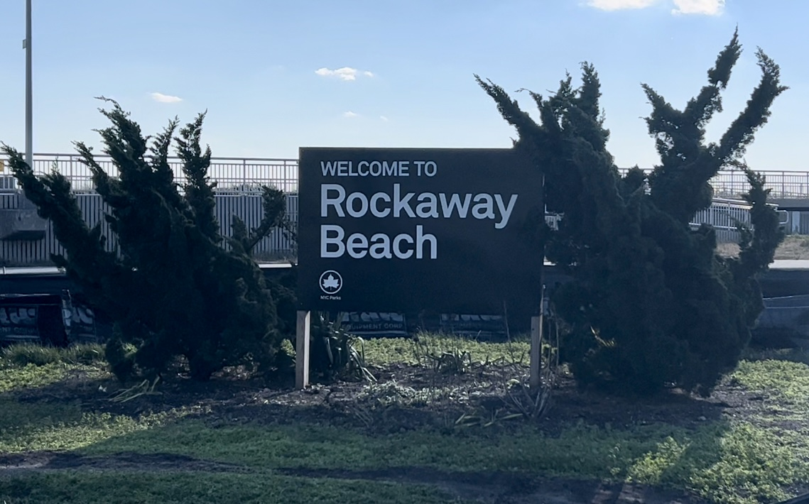
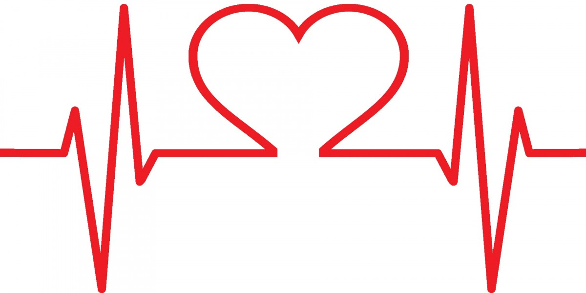

Experts say the peninsula’s high numbers could be linked to racial demographics and crumbling healthcare in the area.
By John Schilling, Dec. 15, 2022

Between 2014 and 2019, heart disease accounted for over 600,000 deaths in the United States each year. During that time, anywhere from 16,500 to just under 18,000 of those deaths came from New York City alone. This is far from surprising as heart disease is the leading cause of death in both New York City and the United States. For one Queens Community District, however, the death rate is particularly staggering.
The Rockaways and Broad Channel, also known as Queens CD 14, was home to approximately 110,000 people in 2019, and just over 400 of those people died from heart disease. When you compare that proportion to that of Queens, New York City, and/or the United States as a whole, Rockaway’s death rate of 377 dominates Queens’ 196, NYC’s 214, and USA’s 164.
Rockaway’s heart disease death rate is the highest of all the community districts, according to numbers from the Bureau of Vital Statistics reported in 2017. These numbers show Rockaway’s rate slightly lower than what was reported in 2019, but the district’s rate still leads that of Central Harlem, the second highest listed, by a wide difference of 58.
The two community districts closest to Rockaway in heart disease death rates in 2019 are Brooklyn’s Coney Island and Riverdale in the Bronx. The lowest heart disease death rate that year came from Manhattan’s Greenwich Village and SoHo, which was also true in 2017.
Rockaway’s high death rate could be attributed to a combination of community factors associated with cardiovascular health, but some experts believe it runs deeper than one’s behavior.
“Poorer health care infrastructure, poorer health living conditions and nutrition, more smoking, and poorer social infrastructure [...] This is true in many urban areas in the US.”
In recent years, Rockaway has been prone to poor healthcare infrastructure since the closing of Peninsula Hospital in 2012, leaving the area with only one hospital, St. John’s Episcopal Hospital, to service the entire peninsula. This factor, paired with the amount of Rockaway residents uninsured and other health factors, indicates that crumbling healthcare infrastructure and medical care disparities are at least partly culpable for the district’s high heart disease death rate.
Based on NYC Health statistics, the districts with higher heart disease death rates, such as Rockaway, Coney Island, and Riverdale, also have higher percentages of adults without insurance or “needed medical care.” Consistently, the areas with lower heart disease death rates, such as Greenwich Village, have lower percentages of these adults, meaning more adults insured and better access to necessary healthcare services.
Access to healthcare services or lack thereof, however, may go beyond geography and could be linked to racial disparities, especially in Rockaway.
“Rockaway is 40% Black, compared to 22% overall in NYC [...] A lot of our health outcomes are made up of these social influences, not simply our genes, behaviors, and co-morbidities.”
Shneyderman’s finding is consistent with the numbers provided by the NYC Bureau of Statistics, which show a positive correlation between an area’s high heart disease death rate and its high percentage of Black residents.
This finding rings true nationwide, as the American Bar Association reports a study of 400 hospitals throughout the United States showing Black heart disease patients receiving “older, cheaper, and more conservative treatments” compared to white patients at those same hospitals. Additionally, the Pew Research Center reported earlier this year that 63% of Black adults cite “access to quality medical care where they live” as a “major” reason for existing health inequalities.
A lot of this also seems to ring true in Rockaway with the lack of hospitals and racial makeup, but it should be noted, however, that the aforementioned trend between high heart disease death rates and a significant Black population is not entirely unfailing. The population of East Flatbush, for instance, is 86% Black, but its heart disease death rate is significantly less than that of Rockaway’s at 168 versus 315.7 per 100,000. Similarly, Tottenville’s population is only 1% Black, but the death rate is over 230 per 100,000.
Therefore, racial demographics are less of an indicator and more of a factor when it comes to heart disease in a given area; A factor in a larger equation that reflects Rockaway’s makeup and potentially that of other urban populations.
Other factors that complete this equation include Rockaway’s smoking, binge drinking, physical activity, diet, and sugary drink consumption statistics. Each of these percentages are relatively similar to those of other neighborhoods with high heart disease death rates, indicating that they do play a factor.
According to the NYC Bureau of Statistics, Rockaway residents do not get as much fruits and vegetables in their diets as residents of Greenwich Village do. At the same time, Greenwich residents drink a third of the sugary drinks that Rockaway residents do and enjoy a significantly higher percentage of physical activity. Given that Rockaway possesses the highest heart disease deaths and Greenwich Village the least, these stats aren’t too shocking.
One might guess, therefore, that Rockaway’s rates of binge drinking and smoking would reflect this pattern, but the numbers indicate the opposite to actually be true. Rockaway’s binge drinking rate is about half that of Greenwich Village’s, and both districts are equal in residents that are smokers.
This shows that multiple factors, related to one’s health behaviors, are at play and linked to heart disease, but when thrown into the mix with existing inequalities and racial disparities that leave communities underserved and without needed medical care, the results are devastatingly fatal.
And Rockaway is certainly no exception, as it continues to surpass its own borough, city, and the nation.
